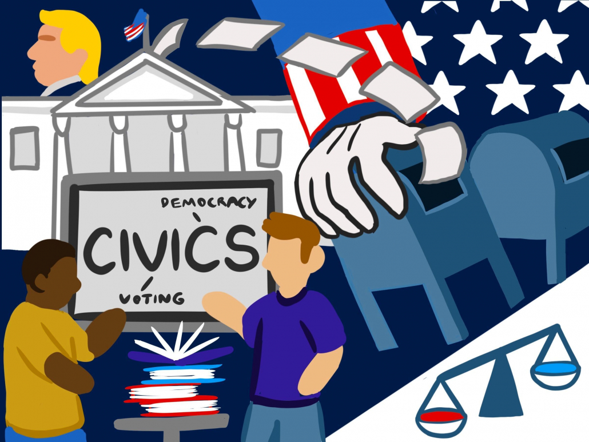

Civics and help students strive to be global and ethical citizens.
Safety: We are safer when all citizens know the rights and laws.

Democracy: Increased participation in duties and responsibilities will make a stronger democracy.
Help the Needy: We can better help the most vulnerable citizens in our neighborhoods.